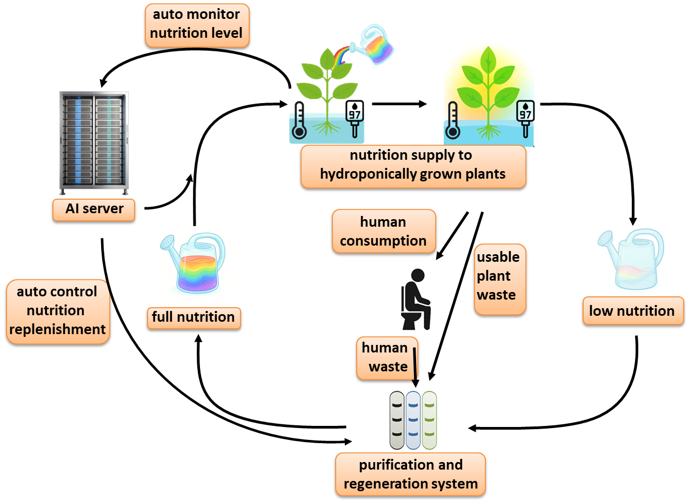

The AI system is designed to run the greenhouse almost completely on its own. It uses sensors to monitor plant health, nutrient levels, water use, and possible contamination. The AI can detect problems early, adjust the system automatically, and recycle water and nutrients so almost nothing is wasted. It also processes human waste into safe fertilizer, helping create a closed loop system where everything is reused.
Manual control systems were rejected because astronauts don’t have enough time to constantly manage the greenhouse. Traditional automated systems were also not good enough because they can’t learn from mistakes or adapt to unexpected changes. AI is better because it can predict problems, react quickly, and operate with very little human help—something that is essential for long term missions on the Moon or beyond.